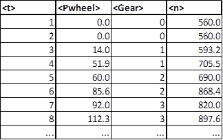

For verification tasks it is possible to manually input the power at wheels (P
wheel)
which is normally calculated via longitudinal dynamics. In this case
VECTO only calculates the losses between wheels and engine and
auxiliary power demand.
This mode is active as soon as P
wheel, Gear and Engine Speed are defined in the driving cycle.
Requirements
Example driving cylce with Pwheel input.
